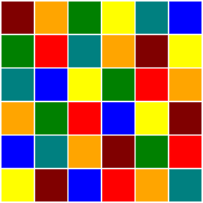
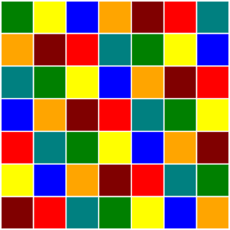

Continuing from last week’s post, in this post we will demonstrate how to use the osage program from Graphviz, to create rectangular drawings of coloured queen graphs. The drawings produced, like the one below, resemble coloured chess boards. Edges in these drawings are invisible but, as we will explain, it is still easy to decide whether or not the colouring of the graph is proper.

Beginning with a queen graph in DIMACS format from Michael Trick’s graph colouring instances page the goal is to produce a properly coloured queen graph in DOT format. For smaller queen graphs we can achieve colourings that use the minimal number of colours using the smallk program of Joseph Culberson. With the resulting colouring data the original DIMACS format graph data both converted into DOT format it is then a simple matter to invoke osage to produce drawings like the one above.
With the intention that others should be able to reproduce our drawings we have made available the source code in the form of several scripts and a Makefile.
The rest of this post has the following structure:
- use smallk to find a proper colouring of a small queen graph,
- convert DIMACS format queen graph into DOT format,
- generate DOT format node colouring data from smallk output,
- augment DOT graph data with DOT node colouring data,
- use osage to draw the graphs as coloured chess boards.
In an upcoming post we will return to the question of verifying, automatically, the properness of colourings.
Colouring Queen Graphs with Small Chromatic Number
In this post we consider several smaller queen graphs. Namely the \(5 \times 5\), \(6 \times 6\) and \(7 \times 7\) queen graphs. These have, respectively, chromatic number 5,6 and 7.
One of Culberson’s graph colouring programs, smallk, is capable of properly colouring graphs with chromatic number at most 8. Consider, for example, the \(5 \times 5\) queen graph. Using smallk to generate a colouring of this graph with 5 colours goes like so:
$ smallk queen5_5.col 1 5The first argument is a randomisation seed and the second argument is the number of colours to use. If the program is successful in finding a colouring, then the output, as with all of Culberson’s colouring programs is a file that looks something like this:
CLRS 5 FROM SMALLK cpu = 0.00 pid = 23501
2 1 5 4 3 5 4 3 2 1 3 2 1 5 4 1 5 4 3 2
4 3 2 1 5 The DOT format supports vertex colouring through vertex attributes. So a conversion of this output into DOT format might begin something like this:
1 [color=red];
2 [color=blue];
3 [color=green];Assuming a mapping of integers to colours \(1\mapsto\text{blue}\), \(2\mapsto\text{red}\), \(5\mapsto\text{green}\) …
In the next section we demonstrate how to take this data, along with the original graph data and produce a file representing the same graph in DOT format with the vertices coloured according to a mapping of integers to colours.
Drawing Coloured Chess Boards
The drawing of our coloured queen graph will be done by osage which, like all programs belonging to the Graphviz project requires graph data to be in DOT format. In this section we show how to convert graphs from DIMACS to DOT format and then how to augment DOT format files with vertex colourings produced by smallk.
The method of this section has been implemented as Makefile which depends on several scripts introduced in the following paragraphs.
The first script dimacs2gv converts graphs from DIMACS format to DOT format. This script is little more than a sed one-liner and doubtless is neither particularly flexible nor especially robust, but suffices, at least, for our purposes and, probably, can be used in a more general setting.
When passed a graph file in DIMACS format, the output of dimacs2gv is the same graph in DOT format.
$ dimacs2gv queen5_5.col > queen5_5.gvA second script colour takes the output of smallk and generates DOT format vertex colouring data.
$ colour queen5_5.col.res > tmp.txtThe output of colour should be added to the DOT output from dimacs2gv to produce a single file in DOT format which has all of the information, adjacency and vertex colour. The two files can be combined via sed:
$ sed -i '1r tmp.txt' queen5_5.gvThis command just says insert the contents of file tmp.txt at line 1 of the file queen5_5.gv. The -i option to sed means make the changes in-place, modifying the file directly instead of printing the result.
The DOT file now can be drawn using the osage program. There are several options to configure. The most significant of which are those that set the style of edge to invisible (-Estyle=invis) and those which make the vertices by drawn as unlabelled boxes (-Nshape=box and -Nlabel=). The other options mostly concern sizes of objects and format of output and output filename.
$ osage -s -Tsvg
-Gsize=5,5\!
-Nshape=box -Nwidth=1 -Nheight=1 -Nfixedsize=true -Nlabel=
-Estyle=invis
queen5_5.gv -o queen5_5.svgThe output of this command is an image in SVG format that looks something like the drawing at the beginning of this post.
Here are drawings of minimal colourings of the \(6 \times 6\):

and \(7 \times 7\) queen graphs:

To check these drawings for properness is easy, even though the edges are not drawn. Choose a colour and allow your eye to pick up all squares of that colour. None lie in the same row, column or diagonal. So no pair of that colour can be occupied by queens who can take each other. Doing this manually for six or seven colours only takes a few seconds. Of course, we would like to have a little program to do this automatically for us and that is a topic we will return to in a subsequent post.